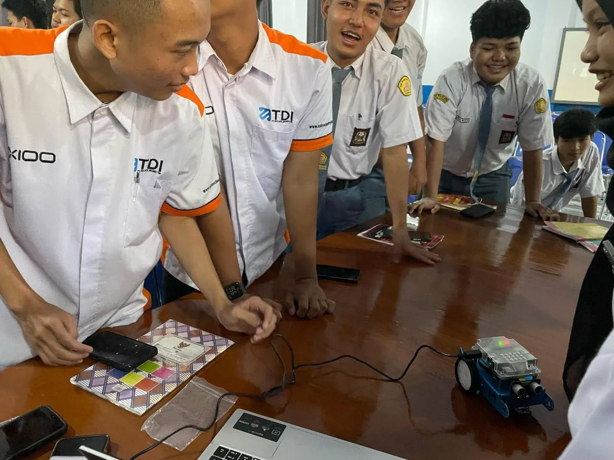
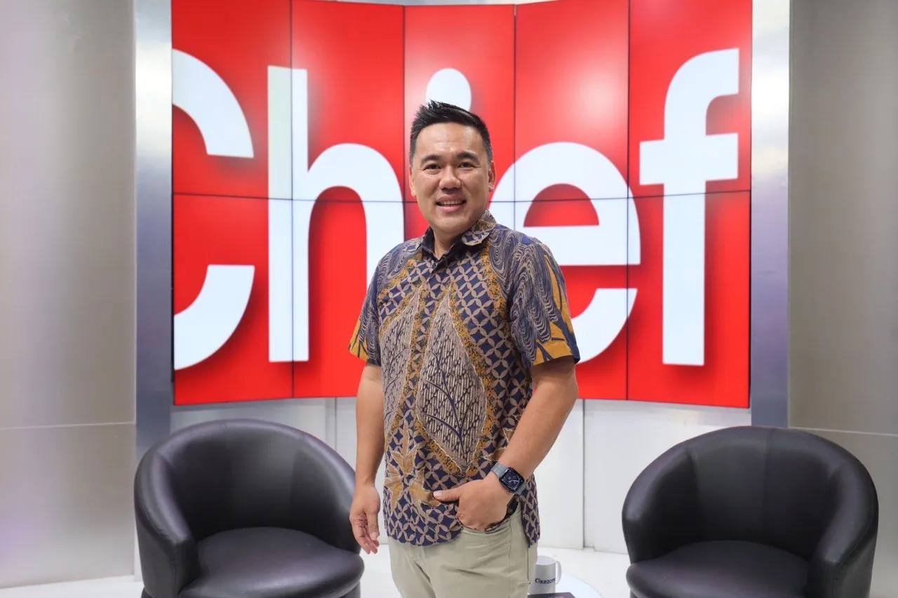
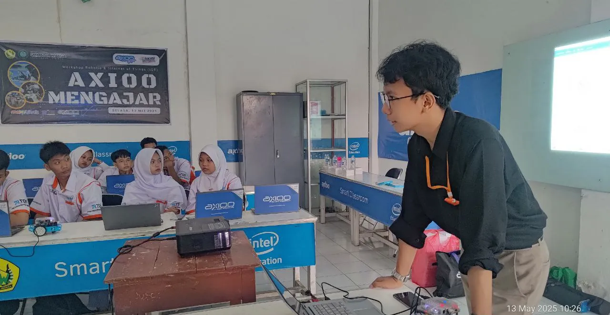
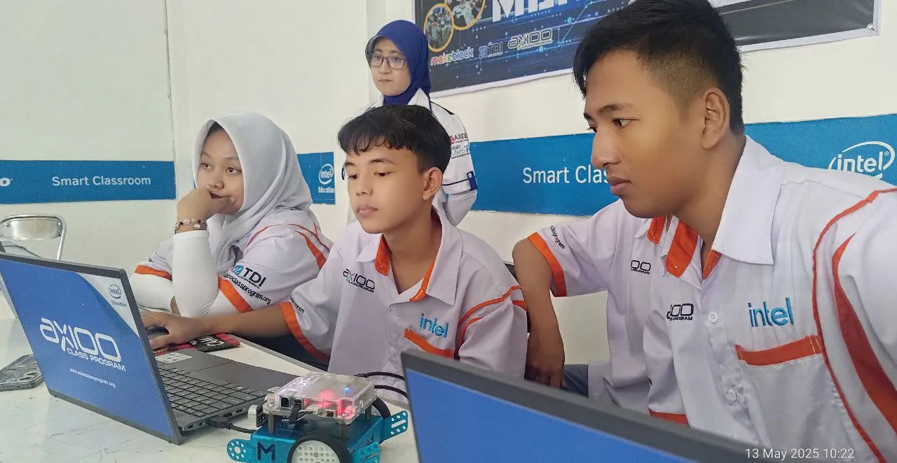
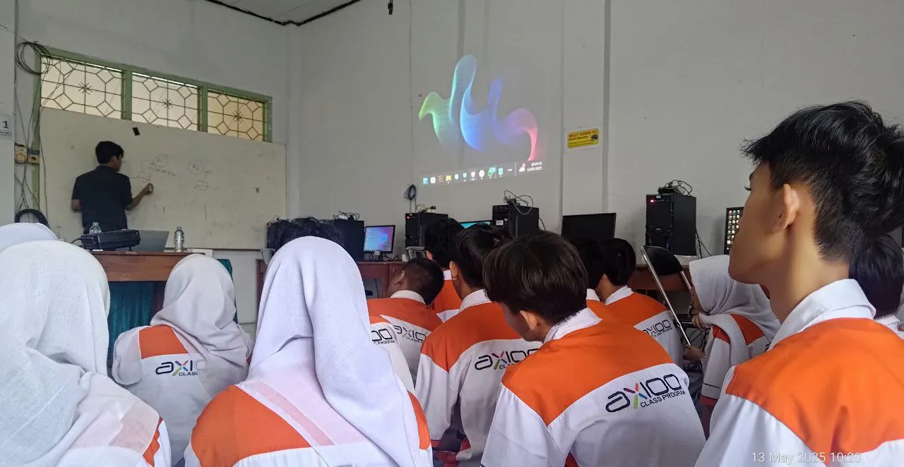
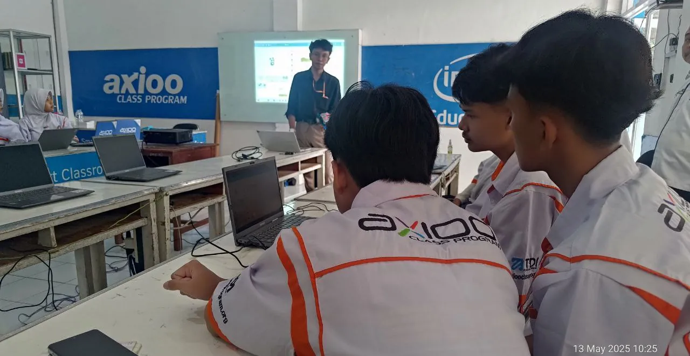
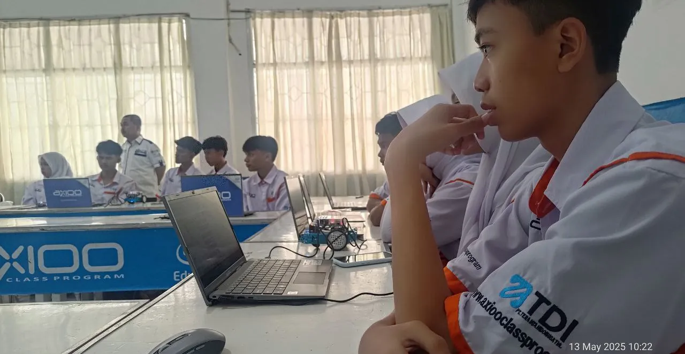
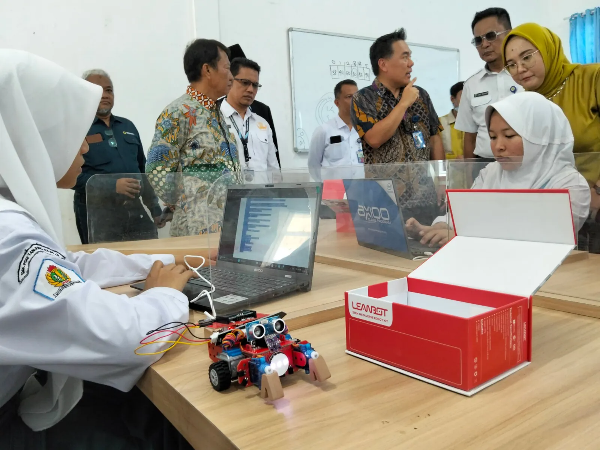

Talenta Bersama
Industri dan sekolah atau kampus menyiapkan talenta bersama, supaya kompetensi lulusan sejalan dengan kebutuhan dunia kerja.
- Magang dan praktik kerja
- Masukan kurikulum dari industri
- Pelatihan dan sertifikasi

KITA Indonesia adalah koalisi industri dan lembaga nirlaba yang peduli pada pendidikan Indonesia, bekerja bersama menyiapkan talenta masa depan.
KITA Indonesia (Koalisi Industri untuk Talenta anak Bangsa) adalah wadah kolaborasi industri dan lembaga nirlaba yang peduli pada pendidikan Indonesia.
DRAF: teks visi dan misi menunggu persetujuan pengurus KITA Indonesia.

Timmy Theopelus
Ketua Yayasan
Periode dan sumber data: menyusul.
Prioritas utama kami adalah menyiapkan talenta bersama, ditopang dukungan untuk pendidikan serta riset dan kebijakan.
Industri dan sekolah atau kampus menyiapkan talenta bersama, supaya kompetensi lulusan sejalan dengan kebutuhan dunia kerja.
Perusahaan dan lembaga nirlaba menyalurkan dukungan untuk pendidikan melalui beasiswa, program CSR, dan hibah yang terarah.
Kajian dan advokasi kebijakan pendidikan, agar kolaborasi industri dan pendidikan punya dasar data dan didengar pembuat kebijakan.
KITA Indonesia terbuka untuk dua kategori anggota.
Perusahaan dari sektor apa pun yang membutuhkan talenta dan peduli pada pendidikan Indonesia.
Bergabung sebagai industriYayasan dan organisasi nirlaba yang bergerak di bidang pendidikan.
Bergabung sebagai lembaga nirlabaCuplikan kegiatan belajar bersama siswa di sekolah.






Daftar anggota akan ditampilkan di sini setelah mereka bergabung dan memberi izin.
Sampaikan minat Anda. Tiga langkah menuju kolaborasi.
Sampaikan minat Anda lewat WhatsApp atau email.